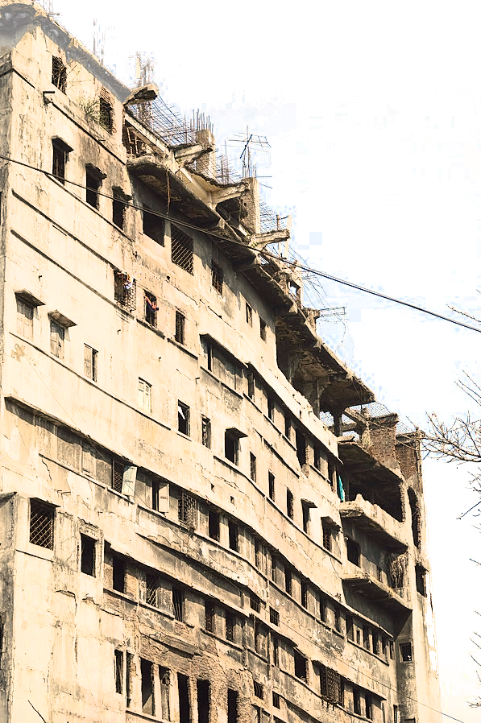

LA TOUR
Vous venez d’arriver au sommet de La Tour, l’immeuble de plusieurs dizaines d’étages le plus mal fâmé du pays. Vous formez une équipe d’opérations spéciales aguérie, équipée pour l’assaut et entrainée au combat urbain. Il va maintenant vous falloir descendre les étages jusqu’au rez-de-chaussé, en accomplissant votre mission en chemin…
| d6 | POURQUOI ÊTES-VOUS ICI ? |
|---|---|
| 1 | éliminer le mystérieux occupant du dernier étage |
| 2 | effectuer une descente sur un cartel de la drogue |
| 3 | libérer votre chef mafieux prisonnier |
| 4 | |
| 5 | |
| 6 |
| d6 | COMMENT ÊTES-VOUS ARRIVÉ LÀ-HAUT ? |
|---|---|
| 1 | en hélicoptère |
| 2 | en parachute |
| 3 | en rappel d’une autre tour |
| 4 | via la nacelle d’un laveur de vitres |
| 5 | l’ascenseur vous a monté jusqu’ici (malgré vous ?) |
| 6 |
| d6 | PJ: QUEL EST TON SECRET ? |
|---|---|
| 1 | vous avez un petit parachute ! |
| 2 | vous avez des explosifs ! |
| 3 | votre fiancée / fils est prisonnier dans la tour ! |
| 4 | vous avez un allié dans la tour ! De qui s’agit-il ? |
| 5 | vous avez un pouvoir psi ! Définissez-le maintenant. |
| 6 | vous êtes un ripoux ! Quel est votre véritable objectif ? |
La Tour
- #étages = 1d6 + #joueurs + 2
- dessinez-la sur une feuille, de manière à ce qu’il soit possible de placer 5 dés sur chaque étage
- lorsque les PJs arrivent dans un étage, déteminez secrètement le nombre de pièces occupées: 1d6 - 1. Lancez ensuite autant de d6 : chacun représente le nombre de truands par pièce. Placez ces dés sur le dessin au fure et à mesure que les PJs explorent l’étage
- si au moins un dé est égal au nombre de pièces occupées, lancez un dé dans la table suivante :
| d6 | MJ: QU’Y A-T-IL A CET ÉTAGE ? |
|---|---|
| 1 | que des civils |
| 2 | des bains-douches abandonnés |
| 3 | |
| 4 | |
| 5 | |
| 6 | le QG des truands |

PJ: Tes caracs
Répartis 1 / 2 / 2 / 4 parmis :
- commander
- close combat
- furtivité
- mitrailler
Lorsque tu réalises une action risquée, fais un jet. Le MJ commencer par déterminer la difficulté :
| Difficulté de l’action | Seuil |
|---|---|
| Peu difficile | 2 |
| Assez difficile | 3 |
| Digne d’un film de John Woo | 4 |
Ensuite, lance autant de d6 que la caractéritique qui correspond à ton action. Si aucune ne convient, lance un seul dé. Si au moins un dé est supérieur à la difficulté, c’est réussi. Si tu obtiens au moins un ⚅, c’est une réussite critique. En combat, cela signifie que tu as été tellement rapide que tu peux immétiatement réaliser un nouveau mouvement, avant que tes adversaires ne puissent réagir !
En cas d’échec lors d’un jet de combat, tu gagnes 1 point d’Adrénaline. Lance un dé dans cette table :
| d6 | PJ: Ouille ! |
|---|---|
| 1 | Tu perds ton arme |
| 2 | |
| 3 | |
| 4 | |
| 5 | |
| 6 | |
| 7 | |
| 8 | Tu meurs |
Note sur ta feuille de perso le nombre de fois où tu as utilisé cette table. La prochaine fois, additionne ce chiffre à ton résultat avant de te reporte à cette table.
PJ: Adrénaline
Lorsque ça devient chaud, et que la tension monte pour ton personnage, demande au MJ si tu peux prendre 1 point d’Adrénaline.
Tu peux utiliser 1 point d’Adrénaline (ou plusieurs) après n’importe quel jet pour changer la face d’un dé d’un point.

Assaut de groupe
Votre tactique éprouvée est de sécuriser le bâtiment pièce par pièce, en appréhendant par surprise tout individu armé, le plus discrètement possible.
Lorsque vous voulez sécuriser une pièce sans vous y prendre seul, lancez autant de d6 que de PJs participant. +1 dé si vous entrez simultanément par 2 accès. La difficulté est le nombre d’ennemis dans la pièce. En cas d’échec, ça tourne mal ! Sinon, la pièce est sécurisée. Attention: s’il y a des ennemis dans les pièces voisines et que vous n’obtenez pas au moins un ⚅, ils seront alertés !
PJ: S.W.A.P.
À chaque fois tu changes d’étage, choisis une capacité dans cette liste:
- élimine un ou plusieurs adversaires à travers une cloison
- intimide l’ennemi pour qu’il baisse les armes et se rende
- réalise une acroboatie à la Sam Fisher : grand écart dans un corridor, longer une corniche d’immeuble…
Lorsque tu l’utilises, lance un d6 : sur un ⚀ ça tourne mal ! Le Mj décrit ce qu’il se passe. Pour toute autre valeur, c’est réussi, décrit ton action. Si le résultat n’est pas un ⚅, tu ne peux plus utiliser cette capacité à cet étage.
| d6 | MJ: SURPRISE ! |
|---|---|
| 1 | l’accès pour descendre plus bas est bloqué |
| 2 | toutes les lampes s’éteignent |
| 3 | l’objectif change d’étage |
| 4 | des truands ligotés dans un étage déjà traversé se libèrent |
| 5 | |
| 6 | plus aucune arme à feu ne fonctionne |